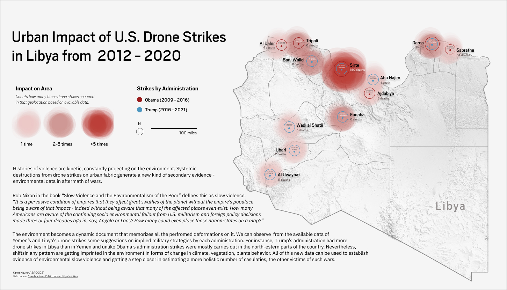

Urban Impact of Drone Strikes

The narrative around drone strikes usually ends on numbers of casualties, but rarely extends to their urban impact and other victims from environmental damages. pic.twitter.com/oYlmd0BLxF
— Karina Nguyen (@karinanguyen_) December 13, 2021